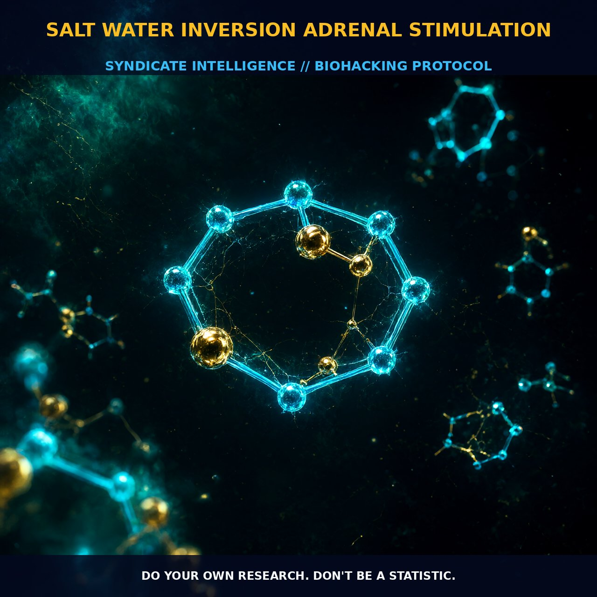

Osmotic Modulation of the HPA Axis: Salt Water

1. The Mechanism of Salt Water Inversion
The core mechanism of this protocol relies on osmotic stimulation to modulate the pituitary-adrenal axis through a time-dependent inversion of sensitivity. Research indicates that short-term salt loading enhances corticotropin responsiveness, while long-term loading blunts it, suggesting a sophisticated adaptive feedback loop within the hypothalamic-pituitary-adrenal (HPA) axis.
This dynamic allows for precise tuning of cortisol output depending on the duration and intensity of sodium exposure, rather than a static suppression or elevation. By manipulating osmolarity in the immediate post-absorptive state, you directly influence the threshold at which corticotropin-releasing hormone (CRH) triggers adrenocorticotropic hormone (ACTH) release from the pituitary gland.
Inversion adds a mechanical layer to this chemical modulation by shifting fluid distribution and stimulating mechanoreceptors that signal the adrenal glands. This physical repositioning—specifically lifting the legs above the heart or inverting the body—helps reduce the acute stress response associated with waking by altering venous return and central blood volume. The combination of osmotic load and gravitational shift creates a synergistic environment where the adrenal cortex is primed to produce necessary cortisol without excessive sympathetic overdrive.
2. Biological Leverage Points
The primary leverage point is the timing of salt ingestion relative to waking, which capitalizes on the circadian variation of plasma ACTH and corticosterone levels. These levels are naturally higher in the evening but require a specific trigger for optimal morning arousal. Short-term salt loading has been shown to increase the response to CRH, effectively making the adrenal glands more responsive to endogenous signals rather than relying on exogenous stimulation alone.
This enhanced responsiveness helps mitigate the jarring stress response typically caused by traditional alarm clocks, allowing for a smoother transition into alertness and cognitive function. Furthermore, salt acts as an essential cofactor for the production of cortisol needed during the early hours, supporting both energy metabolism and neural excitability.
The ingestion of water alongside salt supports digestive function and acts as a diuretic, helping to remove waste products accumulated overnight while maintaining plasma osmolarity. This process ensures that the adrenal glands are not depleted but are instead supported by adequate substrate availability, preventing the mid-morning crash often associated with poor adrenal resilience. The net result is a stabilized energy curve where cognitive clarity is maintained through optimized hormonal signaling and fluid balance.
3. Tactical Implementation
For acute stimulation, ingest approximately half a liter of water mixed with half a teaspoon of table salt within fifteen minutes of waking. This specific ratio and timing provide a concentrated osmotic load that aligns with the body’s natural circadian rhythms for corticosterone release.
Following ingestion, lay on your back with your legs lifted up against a wall for about eight minutes to facilitate the inversion effect. This duration is sufficient to engage the mechanoreceptors and allow the osmotic signal to take effect without causing orthostatic stress upon return to an upright position.
For those requiring a more robust jump-start, consider ingesting two tablespoons of lemon juice alongside the salted water to balance gastric acids and support digestive readiness. Lemon juice acts as a gentle diuretic and supports the removal of metabolic waste, complementing the salt’s role in adrenal stimulation. This protocol can be repeated or adjusted based on individual tolerance to sodium, with the goal of achieving a clear, sustained energy output rather than a spike and crash.
4. Prostar Life Hack
The 15-Minute Wall Anchor: To maximize cortisol priming without the alarm clock shock, combine your salted water (0.5L + 0.5 tsp salt) with a literal inversion. Within 15 minutes of waking, drink the mixture and lie against a wall with legs elevated at a 90-degree angle for exactly eight minutes. This dual-action protocol engages both osmotic receptors and mechanical mechanoreceptors, forcing a clean hormonal reset before you stand.
Prostar Life Hack
The 15-Minute Wall Anchor: To maximize cortisol priming without the alarm clock shock, combine your salted water (0.5L + 0.5 tsp salt) with a literal inversion. Within 15 minutes of waking, drink the mixture and lie against a wall with legs elevated at a 90-degree angle for exactly eight minutes. This dual-action protocol engages both osmotic receptors and mechanical mechanoreceptors, forcing a clean hormonal reset before you stand.
[ AUTHOR: LEAD TECHNICAL RESEARCHER ]